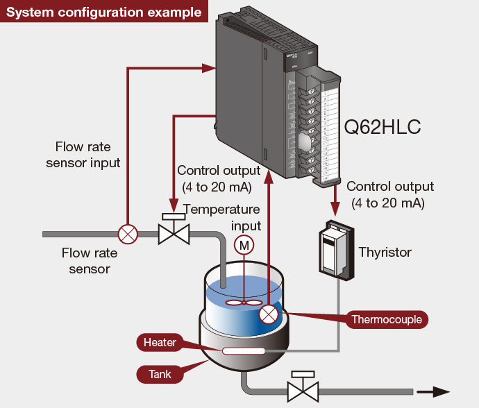

Controllers MELSEC-Q Series
Product features -Analog-

Loop control
Loop control module ideal for temperature and flow rate control environments which require fast response
Loop control module
With its speed-proportional control format and 25 ms sampling cycle, the loop control module is well suited for high-precision, high-resolution thermocouple inputs, micro voltage inputs, voltage inputs, current inputs, and current outputs. It is also ideal for sudden temperature change control, pressure control, and flow control applications which require fast response.
- Connectable to JIS, IEC, NBS, ASTM standards compliant thermocouples.
- Permits analog value measurements of various input ranges by using micro voltage, voltage, and current input sensors.
- Offers program control while automatically changing the target values (SV) and PID constants [proportional band (P), integral time (I), derivative time (D)] in a time-specific manner, as well as a cascade control function that permits control with CH 1 as the primary loop, and CH 2 as the secondary loop.

Lineup
| Number of channels | Input | |||
|---|---|---|---|---|
| Voltage | Current | Thermocouple | RTD | |
| 2 | Q62HLC | |||